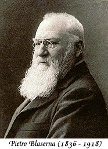

Biblioteca di Fisica
La nuova sede della Biblioteca di Fisica è stata inaugurata nel 2005, dispone di due sale lettura con 90 posti complessivi
(tutti dotati di presa di alimentazione elettrica per pc portatili), 2 computer con accesso diretto ad internet e di una serie
di servizi, come la consultazione, il prestito, l’uso di pc fissi e l’accesso alla rete wireless con il proprio PC portatile.
Tali servizi sono rivolti sia agli utenti istituzionali che agli studenti che frequentano la nostra Università.
SERVIZI:
In biblioteca è possibile accedere ai servizi previa iscrizione, è inoltre permesso scaricare dal sito i testi didattici e
le dispense per i corsi di studio in fisica.
RICERCA BIBLIOGRAFICA:
Per effettuare una ricerca e per trovare informazioni bibliografiche dal catalogo della biblioteca ai cataloghi nazionali ed internazionali, dalla lista dei nostri argomenti
alle banche dati organizzate per discipline basta chiedere aiuto ai bibliotecari.
NOTE STORICHE:

Quando Pietro Blaserna venne chiamato a dirigere il Regio Istituto Fisico di Roma dal 1873 al 1918, trovò in
eredità dalla passata gestione il nucleo più antico dei libri che poi confluiranno nella attuale Biblioteca,
il Fondo Volpicelli. Il fondo prendeva il nome da Paolo Volpicelli,
vecchio professore di Fisica sperimentale all’Università di Roma e figura di transizione al nuovo Stato unitario.
Con il trasferimento dell’Istituto a via Panisperna, nel novembre del 1881, la biblioteca fu sistemata al primo piano del nuovo edificio
e notevolmente potenziata. Grazie alle economie fatte da Blaserna nella costruzione del fabbricato, a cui aveva presieduto personalmente,
con i fondi residui si acquistarono gli arredi per la biblioteca. L’Inventario Biblioteca,
interamente compilato da Blaserna fino al 1890, è una importante testimonianza di questo periodo.
Nel fondo della Biblioteca del Regio Istituto Fisico, all’epoca tra le più ricche e complete d’Italia nel settore della fisica,
figurano tra gli altri:
Jahresbericht der Chemie (dal 1870), Annalen der Physik und Chemie, Her. Poggendorff (dal 1824), Comptes Rendus des Séances (dal 1835, fondo Volpicelli), Philosophical Magazine (dal 1798), Annales de Chimie et de Physique (dal 1789, fondo Volpicelli), Berghaus phys. Atlas, Gazzetta Chimica Italiana (dal 1871), Bibliotheque universelle (dal 1819, fondo Volpicelli), il Nuovo Cimento (dal 1855, fondo Volpicelli), Nature : Journal of Science (dal 1863), Natura, editore Cappanera (dal 1879), Annali di Matematica, La lumiere éléctrique (dal 1879), Revue scientifique (dal 1863, fondo Volpicelli), Repertorium für physikalische Technik , Her. Carl (dal 1866), Fortschritte der Physik (dal 1869), Journal für reine und angewandte Mathematik (dal 1873), Journal des Physique, Chimie et Histoire Naturelle (dal 1872), Astronomische Nachrichten (dal 1873), Zeitschrift für InstrumentenKunden (dal 1881), Meteorologische Zeitschrift (dal 1884), Electrotechnische Zeitschrift (dal 1880), Physical Review (dal 1893). Tra le nuove accessioni di libri e periodici troviamo: M. Plank, Theorie der Wärmestrahlung, Festschrift Ludwig Boltzmann , 1904, O. Heaviside, Electromagnetic Theory, 1893, P. Appell, Traitè de mecanique rationnelle; A. Cotton, H.Mouton, Les ultramicroscopes et les objets ultramicroscopiques, 1905 e la rivista Journal de physique et le radium (dal 1920). Tra i libri, spesso acquistati in fascicoli poi fatti rilegare: Lehrbuch der Physik, O. D. Chwolson; Thermodynamik e Theoretische Physik, M. Planck; The Theory of electrons, H. A. Lorentz e, qualche anno dopo, la Théorie de l’élasticité des corps solides, A. Clebsch e l’ Handbuch der Elektrizität und des Magnetismus , Her. L. Graetz. Anche i libri rari appartenenti al fondo Volpicelli erano numerosi e a questi si erano aggiunti altri libri acquistati dall’antiquario Carbone di Roma.
Con la direzione di Orso Mario Corbino , dal 1918 al 1937, la Biblioteca di Fisica divenne una moderna struttura che rifletteva per altro,
a partire dagli anni Trenta, il nuovo decorso dell’Istituto divenuto all’epoca un centro di eccellenza a livello europeo.
Nel 1919 venne registrato un acquisto ingente di testi di storia e teoria della musica, sui fenomeni fisici della fonazione,
funzionali alle attività dell’Ufficio del corista internazionale. Nel 1922 fecero il loro ingresso in Biblioteca numerose opere
di relatività ristretta e generale oltre che di cosmologia. In Italia fino al 1915 nessuno dei maggiori fisici e matematici aveva
infatti ritenuto di doversi occupare di relatività ristretta, mentre la relatività generale avrà accoglienza migliore.
Della nuova generazione dei fisici teorici in Italia, Enrico Fermi ed Enrico Persico accolsero senza resistenze la relatività
generale e tra il 1921 e il 1923 le dedicarono i primi lavori. Un riflesso di questa apertura favorita da Corbino si riscontra
così nell’acquisizione massiccia nel 1922 di numerose opere sull’argomento tra le quali saggi di Einstein, Lorentz, H. Weyl, Lemeray,
Eddington, E. Picard, Bloch, Marcolongo, H. Becquerel. Nel 1937 l’Istituto Fisico si trasferì nella attuale sede.
Dopo gli anni bui della guerra, negli anni della ricostruzione, inizierà con Edoardo Amaldi
un’altra fase di evoluzione per la Biblioteca, che rifletterà puntualmente i grandi eventi internazionali della fisica,
gli interessi e gli studi della comunità romana dei fisici.
Articolo scritto dalla Prof.ssa Maria Grazia Ianniello.
COME ARRIVARE:
Dalla Stazione Termini:
BUS:310 o 649
Metro: Linea B fino al Policlinico Umberto I tram 3 o 19
Link alla mappa